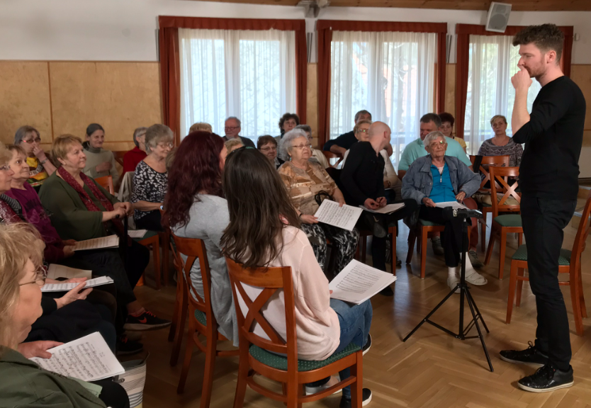

SINGLUNG TERÁPIÁS HÉT
Első nap: ismerkedés

délelelőtt: légző torna, beéneklés, szólamok

délután: közös éneklés
2-4. nap:
délelőtt: beéneklés, torna és mozdulatok, légzéstechnika-jóga
délután: közös gyakolások
5. nap:
délelőtt: mozgás és hangtechnikai gyakorlás

délután: főpróba

6. nap:
Fellépés

A program része a közös reggeli, ebéd, a délutáni fakultatív csoportos aktivitások,
valamint a fellépés után közös vacsora a közönséggel.